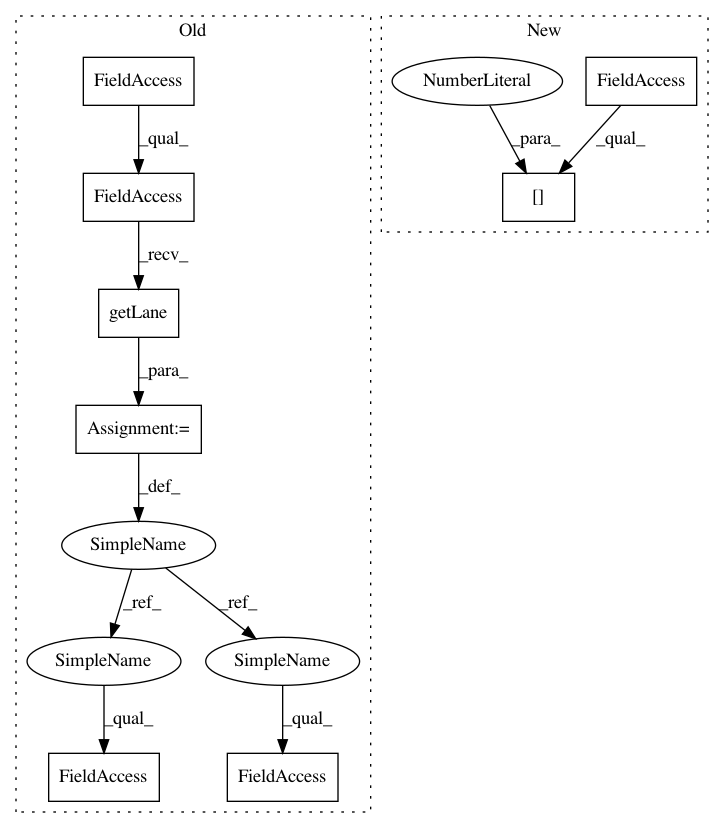

4d00397c46848cdfd91798c8f3b1b9babb0014cb,ilastik/workflows/tracking/manual/manualTrackingWorkflow.py,ManualTrackingWorkflow,connectLane,#ManualTrackingWorkflow#Any#,52
Before Change
def connectLane(self, laneIndex):
opData = self.dataSelectionApplet.topLevelOperator.getLane(laneIndex)
opRawData = self.rawDataSelectionApplet.topLevelOperator.getLane(laneIndex)
opObjExtraction = self.objectExtractionApplet.topLevelOperator.getLane(laneIndex)
opTracking = self.trackingApplet.topLevelOperator.getLane(laneIndex)
//// Connect operators ////
opObjExtraction.RawImage.connect( opRawData.Image )
opObjExtraction.BinaryImage.connect( opData.Image )
opTracking.RawImage.connect( opRawData.Image )
opTracking.LabelImage.connect( opObjExtraction.LabelImage )
opTracking.BinaryImage.connect( opData.Image )
opTracking.ObjectFeatures.connect( opObjExtraction.RegionFeatures )
After Change
opTracking = self.trackingApplet.topLevelOperator.getLane(laneIndex)
//// Connect operators ////
rawSlot = opData.ImageGroup[0]
segSlot = opData.ImageGroup[1]
opObjExtraction.RawImage.connect( rawSlot )
opObjExtraction.BinaryImage.connect( segSlot )
In pattern: SUPERPATTERN
Frequency: 4
Non-data size: 8
Instances
Project Name: ilastik/ilastik
Commit Name: 4d00397c46848cdfd91798c8f3b1b9babb0014cb
Time: 2013-05-13
Author: bernhard.kausler@iwr.uni-heidelberg.de
File Name: ilastik/workflows/tracking/manual/manualTrackingWorkflow.py
Class Name: ManualTrackingWorkflow
Method Name: connectLane
Project Name: ilastik/ilastik
Commit Name: 4b35855d4ea461644b8e49caf9679e39ddc4877c
Time: 2013-04-23
Author: bergs@janelia.hhmi.org
File Name: ilastik/workflows/tracking/chaingraph/chaingraphTrackingWorkflow.py
Class Name: ChaingraphTrackingWorkflow
Method Name: connectLane
Project Name: ilastik/ilastik
Commit Name: ed8a0425c915995029dcdc0450037749b6d4aa52
Time: 2013-05-15
Author: bernhard.kausler@iwr.uni-heidelberg.de
File Name: ilastik/workflows/tracking/manual/manualTrackingWorkflow.py
Class Name: ManualTrackingWorkflow
Method Name: connectLane
Project Name: ilastik/ilastik
Commit Name: 4b35855d4ea461644b8e49caf9679e39ddc4877c
Time: 2013-04-23
Author: bergs@janelia.hhmi.org
File Name: ilastik/workflows/objectClassification/objectClassificationWorkflowBinary.py
Class Name: ObjectClassificationWorkflowBinary
Method Name: connectLane
Project Name: ilastik/ilastik
Commit Name: 4d00397c46848cdfd91798c8f3b1b9babb0014cb
Time: 2013-05-13
Author: bernhard.kausler@iwr.uni-heidelberg.de
File Name: ilastik/workflows/tracking/manual/manualTrackingWorkflow.py
Class Name: ManualTrackingWorkflow
Method Name: connectLane